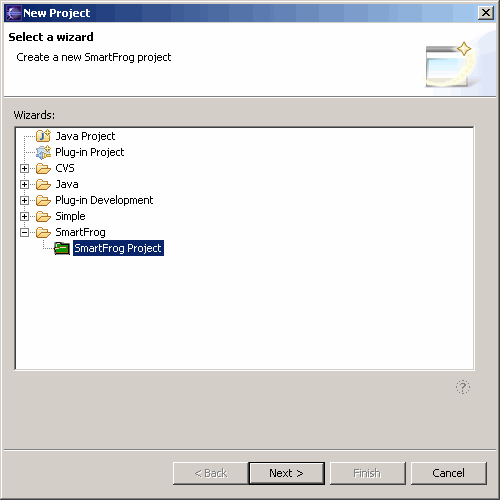
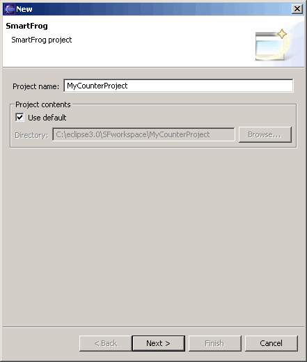
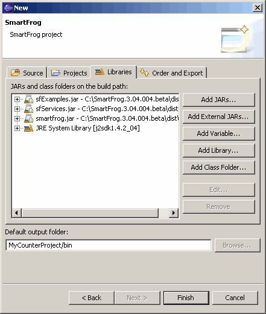
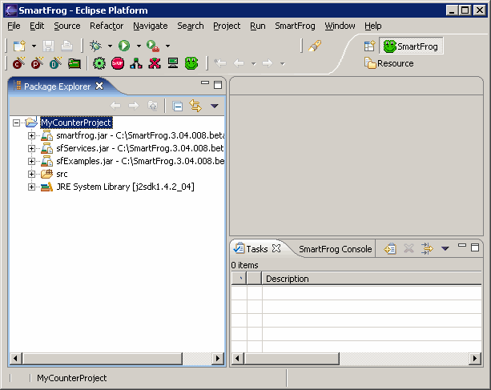

Before you can create SmartFrog description files and Java class component files, you must first create a SmartFrog project. The generated project will contain all the necessary SmartFrog and JRE library JAR files needed to successfully parse and compile the description and Java files.
NOTE: Before proceeding, make sure that the SmartFrog installation location is set in the Eclipse IDE. To check, follow the instructions in the Specifying SmartFrog properties section in the online help.
To create a SmartFrog project for your SmartFrog description and Java class component files.



You can accept all the default values on the various tabs. As you can see from the above screen shot, the relevant libraries have been imported into your project.
The Package Explorer view displays your SmartFrog project populated with the necessary SmartFrog and JRE library JAR files.The SmartFrog Eclipse plug-in allows you to easily create a SmartFrog project in which you can create your description and Java component files.